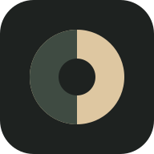

開啟相機，或匯入你的照片。

照片準備好後，點「儲存／分享照片」。iPhone 請在系統選單選「儲存影像」；其他手機的選項依裝置而定。
JPEG 輸出不保留 EXIF／GPS。PNG 透明區域會以白底處理。
長按下方照片，選擇瀏覽器提供的儲存影像選項。若沒有此選項，請用 Safari／Chrome 開啟本站，或下載檔案。
五種電影色彩，從眼前開始。即時取景或匯入照片，用 MIX、光影、顆粒與曲線找到自己的畫面。
照片只在裝置內處理。離開或重新整理前，請先匯出。相機只在開啟時使用，離開頁面會停止；不使用麥克風。
支援的瀏覽器會優先取得獨立靜態照片，否則保存取景影像的實際尺寸。即時取景上方會顯示解析度；若偏低，可從「更多 → 系統相機」拍攝後回來套色。網頁相機不等同系統相機的最高畫質。匯入支援 JPEG、PNG、WebP；HEIC、RAW、影片尚未支援。需要 WebGL2。
「滿版檢視」只改變預覽，匯出仍保留完整照片。手機瀏覽器可加入主畫面使用。
色彩為創作詮釋，非特定作品官方 LUT。圖示：Tabler Icons，MIT License。